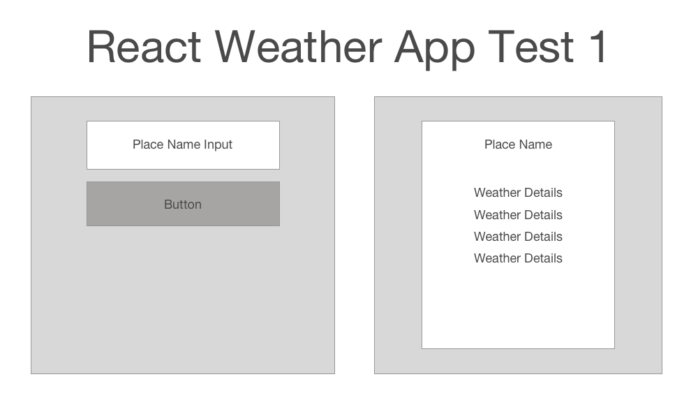
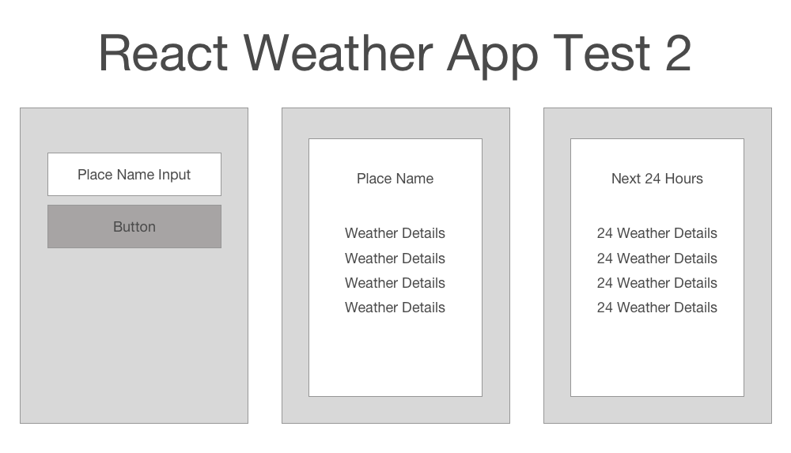
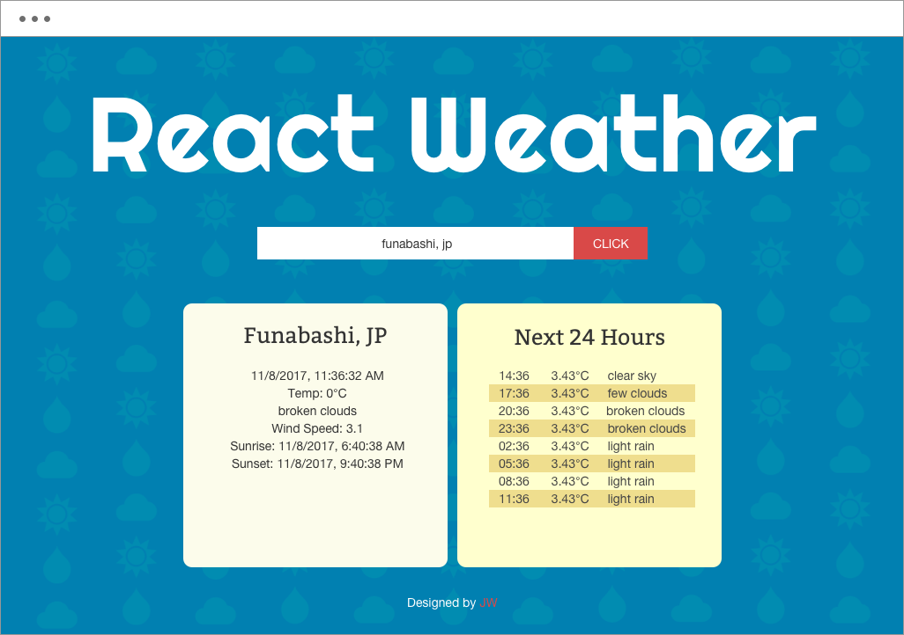
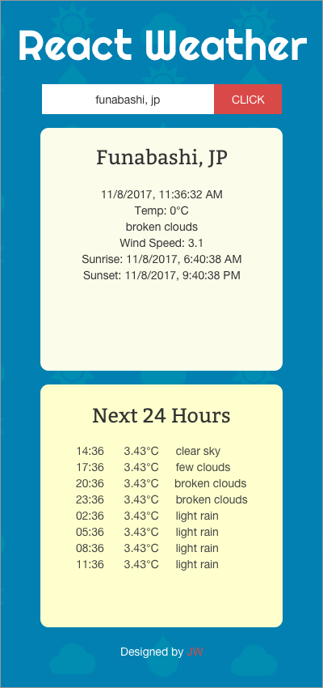

React
Google Timezone API
Open Weather Map API
ES6
Babel
Google Analytics
Github pages
Plan
This app was born out of my desire to learn more about APIs in general. I had honestly never used an API before and wanted to build another React App to practice. As I have lived abroad for the past 10 years in a variety of countries I sometimes like to check in on the weather in places I have lived in the past to see how my loved ones are spending there days. Thus this simple React app was born.
Process
When I set out to create this application, the logic for it was fairly simple. I just wanted to be able type in a city's name, click a button and have that city's weather data displayed. There is a free API called openweathermap.org which offers up wonderful weather data for free. It look a while to learn how to use React's life cycle hooks and to understand Javascript's asyncronous nature when trying to pull data from an API. Honestly just this first step took me quite a long time as this was my first time working wit APIs.
Once I got the basic logic down I realized that openweathermap.org also offered an API which gave a city's weather forcast. I thought it would add a bit more functionality to my app if I hooked into that API as well. Everything went quite smoothly until I realized that the API expressed time in UTC, Coordinated Universal Time and does not give the time at that destination which you are accessing. I thought that it would be quite difficult for the user to understand if I just put the forcast 3 hours from now, or 6 hours from now, and that it would be easier to understand if it gave the local time at that destination. This proved to bit more cumbersome than expected. Basically I needed to grab the city that the user input, fetch the openweathermap data, then use that location to access google's map API to get see how much that location is offset from UTC and to see if that location is affected by day light savings time. Quite the hastle just to display the time, but I think that for the person looking at the displayed data, that is just what is expected.
Publish
Now that all of the logic was in place, I created a fun background with some weather shapes and designed a layout that looks great on both desktop and mobile. This project is hosted on github pages so please feel free to have a look and try out the app for yourself
 